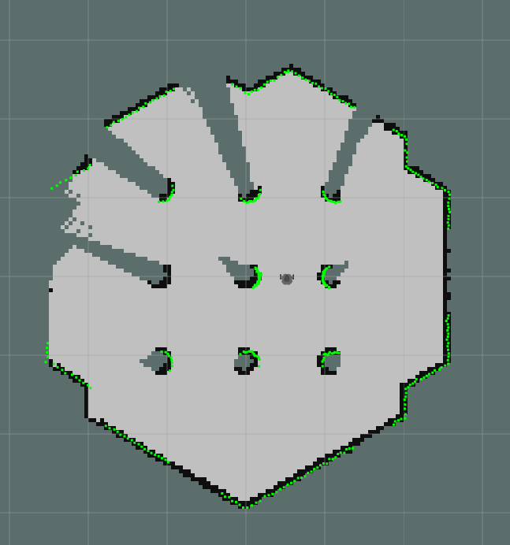
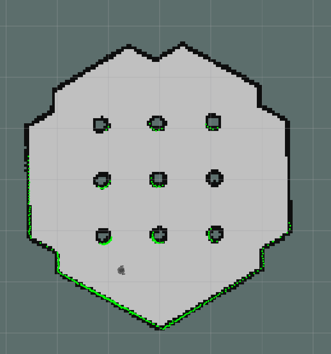
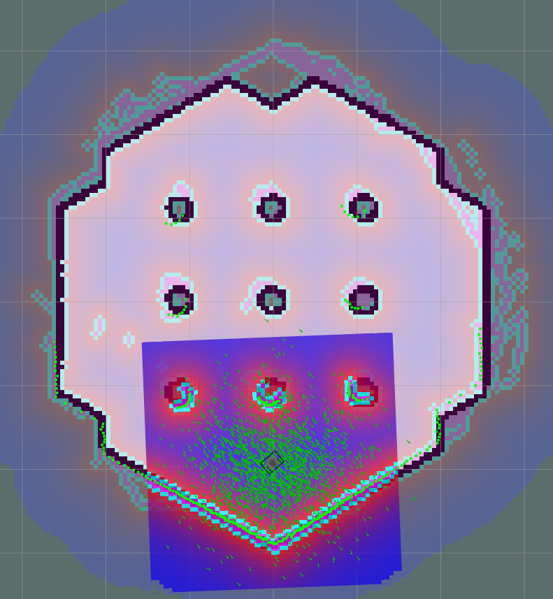
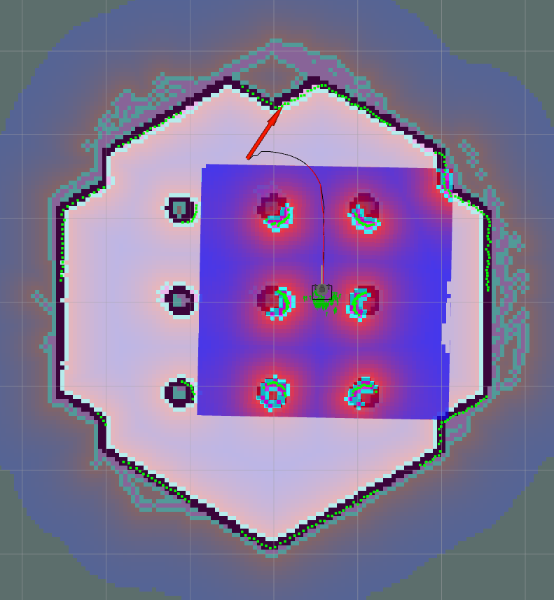

Introduction to ROS and Turtlebot3
Julien Nembrini
October 8, 2026
Human-IST, ProtoFab, LearningLab, UniFR
ProtoFab Assignment 3: Introduction to SLAM and navigation with the Turtlebot3
Introduction
This practical work focuses on learning the basic concepts of SLAM, navigation and planning through a series of small tasks involving ROS. Simlar to Assignment 2, each task consists of applying hands-on commands in the terminal to illustrate how ROS and Turtlebot3 work. You will be asked to code on Task 3 and 4.
In this practical work, you will perform the following tasks:
Task 1 – Test SLAM mapping in simulation
Task 2 – Test robot navigation in simulation
Task 3 – Send a goal to the robot through a topic
Task 4 – Create a controller able to navigate from one goal to another (code on your own)
Task 5 – [Optional] Create a map of (a small part of) the Project Space with the real robot and navigate into it
Learning objectives:
At the end of the assignment, you should be able to
Understand the practical implications of classical mobile robotics algorithms
Understand the use of callbacks to monitor the robot state
Use high-level topics to steer the robot
Have a base code canvas to develop your project
Pre-requisites
A working installation of ROS2 (ubuntu 24.04 + ROS2 jazzy) (see AN01)
Basic understanding and hands-on experience of ROS2 workings and concepts (see AN02)
Hints
When you switch between simulation and real robot do not forget to change the ROS_DOMAIN_ID in your ‘~/.bashrc’ file AND to source it!
Make sure your map is complete. An uncomplete map can lead to problems by path planning.
Tasks
Task 1 – Test SLAM mapping in simulation
This task is inspired from this page (switch to the Jazzy tab) and will be conducted in simulation.
Switch to simulation
If you have run the real robot previously, open a terminal and edit your '~/.bashrc' file to change the ROS_DOMAIN_ID back to 30 (see AN02).
Do not forget to source it afterwards to make the change take effect!
Start the gazebo simulation.
Open a new terminal and start the gazebo simulation with the simple world
Start the SLAM service
Open a new terminal and start the SLAM algorithm using Cartographer.
This should open rviz with the start of a map based on current LIDAR readings.
Explore the environment to build the map.
Open a new terminal and start the teleoperation (see AN02)
Explore the environment using the keys. Observe how the map is created as more information is available from the LIDAR and the robot odometry.
Make sure your map is complete, e.g. that all sides of the world’s obstacles have been mapped, before saving it.


Task 2 – Test robot navigation in simulation
This task is inspired from this page (switch to the Jazzy tab).
Navigation is the class of algorithm used to bring a robot from the estimate of its current location to a point on the map. It will use the map information to plan a path that avoids known obstacles. During its movement, the robot will constantly update its location using AMCL (Adaptive Monte Carlo Localization) which uses multiple estimates of its position. We will first show the convergence to the correct position from an initial random estimate, and secondly test interactively the ros2 navigation2 algorithm.
Start gazebo
- If you haven’t stopped the gazebo simulation from Task 1 you can continue. Otherwise restart gazebo following points 1 and 2 from Task 1.
- Make sure the SLAM service is stopped
Start the navigation service
Open a new terminal and start the navigation services.
The navigation service uses AMCL to locate the robot. It is a probabilistic model composed of multiple particles that each represent a possible position. The robot’s estimated position is then the average of these positions. To locate itself accurately, the robot can either update its position from an initial random situation or refine an initial estimate. To illustrate the iterative position refinement through the particles we will first randomly spread them over the map.
Open a new terminal and tell the AMCL localization to spread the particles randomly over the map
Restart the teleoperation, move the robot around and observe how the particles tend to converge to the real position of the robot. The symmetries of the simulated world may delay the localization process.
When you start the navigation service, the RViz interface has a button to indicate a initial 2D pose estimate.
- Select the “2D pose estimation” button and then click on the map to indicate where the robot is and its orientation. Note how the particles spread around the robot to account for a possible imprecision in the estimation.

2D pose estimation Restart the teleoperation, move the robot around and observe again how the particles converge to the real position of the robot.
Now that the robot is located on the map, it can use the map information to navigate to another location.
Stop the teleoperation (the robot will not move if it is still active)
Select the “2D nav goal” button and then click on the map to indicate where the robot should go to and its final orientation. The robot then plans its path and start moving towards the goal. Check the “local map” box (if not already) to observe the local planner path and cost map.

2D navigation goal IMPORTANT: the robot will not react to a navigation goal order if it does not consider itself sufficiently located, or if the goal is not reachable.
If you see light gray traces on your map. There might be a problem with the costmap (used by the global planner). Here is the command to reset the costmap
Select a new goal before the robot reaches the current goal, and observe that it triggers replanning and movement of the robot towards the newly defined goal without first reaching the current goal.
In the remaining of the semester, you do not need to reset the position estimate. Just use the “2D pose estimation” button, move the robot around a little to let it locate itself. You will then be able to send goals.
Task 3 – Send a goal to the robot through an action
In this task we will use the RQt interface and the action “/navigate_to_pose” to send a goal to our robot.
Start gazebo and the navigation as in Task 2 and make sure the robot is well located on the map using teleop
Start rqt in a new terminal to monitor the topics
```default [localpc-terminal] rqt ```Understand the pose estimation topic “/acml_pose”
Open the topics monitor (Plugins \rightarrow Topics \rightarrow Topics Monitor)
Expand the “/acml_pose” topic. The message type is a “geometry_msgs/PoseWithCovarianceStamped” and its structure is as follows
- header
- frame_id
- seq
- stamp
- pose
- covariance
- pose
- orientation
- position
- header
The header contains a frame ID, a sequence number and a time stamp.
The covariance is a 6x6 matrix which represents the uncertainty about the position estimate with the columns/rows in order (x, y, z, rotation about X axis, rotation about Y axis, rotation about Z axis). If your robot is well localized, the elements in this matrix should be small.
Position is a (x,y,z) vector, while orientation is a quaternion (x,y,z,w), which represents an orientation in space. Have a look at the ROS documentation on quaternions or the tutorial. The important information is that this quaternion is normalized (e.g. its norme is equal to 1)
Send a goal to the robot
Open the Topic Monitor ((Plugins \rightarrow Topics \rightarrow Topic Monitor)), select the topic “/goal_pose”
Expand the topic. The message type is a “geometry_msgs/msg/PoseStamped” and its structure is as follows
- header
- stamp
- seq
- nanosec
- frame_id
- stamp
- pose
- position
- x,y,z
- orientation
- x,y,z,w
- position
- header
The only difference is that there is no covariance matrix because there is no uncertainty in the goal definition.
The way to send a goal to the robot is through an action message. The action is called “NavigateToPose” and is defined in the package “nav2_msgs”. The action message is sent to the topic “/navigate_to_pose” and has the same structure. Using the following command in a new terminal should make the robot move to the goal position (0.75, 0, 0) with orientation (0,0,0,1).
IMPORTANT: the “frame_id” field is set to “map”, otherwise your goal message will be ignored by the robot (one way to find this information is by monitoring the action feedback topic when manually assigning a goal as in Task 2).
Test with other goal positions and orientations
Test with goal positions (0,0,0) and (2,0,0) and observe the robot reactions.
Test with goal orientations (0,0,1,0), (0,0,1,1), (0, 0, 0.7071068, 0.7071068) and observe the robot reactions.
Here is a simple converter from Euler angles or axis-angle to quaternion.
Task 4 – Create a controller able to navigate from one goal to another
In this task, we will achieve the same behaviour with a python script, which will additionally monitor whether the robot has reached the currently assigned goal to assign another and make the robot go back and forth between two goals.
Make sure you have gazebo simulation and the navigation running (task 2 points 1.and 2.)
Create the goal python controller and run it
Create the file ``goal_controller.py’’ and open it in an editor (here VS code)
Use the source code below for your script (you can copy-paste). First have a look at the code to understand its structure.
Look at the different callback functions
Run the ccontroller
The robot should get to the (2,0,0) goal
Monitor the goal status and if the goal 1 is reached, switch to goal 2 (TODO 1).
Using the distance remaining, switch to the other goal if the distance is below 0.2 m (TODO 2). If setting a new goal is the first naive approach, the appropriate way is to cancel the current goal, wait for the callback and only then set a new goal. Help from LLM is encouraged.
#!/usr/bin/env python3 import math import time import rclpy from rclpy.node import Node from rclpy.action import ActionClient from nav2_msgs.action import NavigateToPose class GoalNavigation(Node): def __init__(self): super().__init__('goal_nav') self.action_client = ActionClient( self, NavigateToPose, '/navigate_to_pose' ) # define 2 goals: (x, y, yaw_degrees) self.goals = [ (2.0, 0.0, 0.0), (0.0, 0.0, 180.0), ] def send_goal(self): # only one goal used x, y, yaw_degrees = self.goals[0] self.get_logger().info( f'Sending goal: ' f'x={x:.2f}, y={y:.2f}, yaw={yaw_degrees:.1f}°' ) goal = NavigateToPose.Goal() # Coordinate frame goal.pose.header.frame_id = 'map' goal.pose.header.stamp = self.get_clock().now().to_msg() # Position goal.pose.pose.position.x = x goal.pose.pose.position.y = y goal.pose.pose.position.z = 0.0 # Convert yaw -> quaternion yaw = math.radians(yaw_degrees) goal.pose.pose.orientation.x = 0.0 goal.pose.pose.orientation.y = 0.0 goal.pose.pose.orientation.z = math.sin(yaw / 2.0) goal.pose.pose.orientation.w = math.cos(yaw / 2.0) future = self.action_client.send_goal_async( goal, feedback_callback=self.feedback_callback ) future.add_done_callback(self.goal_response_callback) def goal_response_callback(self, future): goal_handle = future.result() if not goal_handle.accepted: self.get_logger().error('Goal was rejected!') rclpy.shutdown() return self.get_logger().info('Goal accepted.') result_future = goal_handle.get_result_async() result_future.add_done_callback(self.goal_result_callback) def feedback_callback(self, feedback_msg): feedback = feedback_msg.feedback # TODO 2: if the distance is below 0.2 m switch to the other goal self.get_logger().info( f'Distance remaining: ' f'{feedback.distance_remaining:.2f} m ' ) def goal_result_callback(self, future): result = future.result() # TODO 1: when reached a goal go to the other one # 4 = SUCCEEDED if result.status == 4: self.get_logger().info( f'Goal reached!' ) else: self.get_logger().error( f'Navigation failed with status {result.status}.' ) rclpy.shutdown() def main(args=None): rclpy.init(args=args) node = GoalNavigation() node.get_logger().info( 'Waiting for /navigate_to_pose action server...' ) node.action_client.wait_for_server() node.get_logger().info( 'Action server available. Starting navigation.' ) node.send_goal() rclpy.spin(node) node.destroy_node() if rclpy.ok(): rclpy.shutdown() if __name__ == '__main__': main()
Some more details about portions of the code above:
Shebang (line 1,
#!/usr/bin/env python3): every Python ROS node will have this declaration at the top. This first line makes sure your script is executed as a Python script.Imports: imports the necessary action messages
Main GoalNavigation class :
def init(self): define potential variables, initialize an action client
def send_goal(self): is called to send a goal to the action server.
def goal_response_callback(self, future): returns a result regarding the current goal command.
def feedback_callback(self, future): returns a feedback massage that contains for instance an estimate of the current distacne to goal.
def goal_result_callback(self, future): is called when the goal is reached or upon a change
Task 5 [Optional] Create a map of the Project Space with the real robot and navigate into it
Change the ROS_DOMAIN_ID in your .bashrc to your robot number
Source your .bashrc on all open terminals.
Turn on the robot. Make sure you are on the right wifi.
ssh into the robot (the IP must be the one of your turtlebot3). Turtlebot3 OS - user: ubuntu, password: turtlebot.
<!–
Update the robot bashrc (edit the file using nano editor). Update ROS_MASTER_URI variable in the .bashrc file with the value of your localpc-ip. Save, exit nano and then source your file.
–>
Start turtlebot3_robot node on the robot. This establishes the connection between the robot and ROS and brings up all necessary drivers.
Start the SLAM service
Open a new terminal and start the SLAM algorithm using Cartographer.
This should open rviz with the start of a map based on current LIDAR readings.
Start teleop on your local machine (open a new terminal if necessary)
Explore the environment to build the map. Do not go move or turn too fast.
Save the map and start nvaigation with this map.